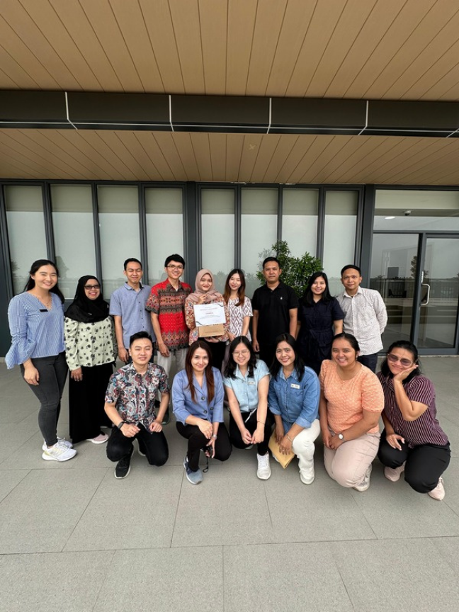

Jejak profesional lintas industri.
Menjalankan live selling di TikTok, memproduksi konten teaser untuk promosi produk, merekapitulasi data pesanan, serta merespons pertanyaan dan keluhan pelanggan secara proaktif dan real-time.

Merancang antarmuka dan prototipe interaktif untuk aplikasi mobile menggunakan Figma, menangani troubleshooting perangkat (printer, program TV), serta membantu rekapitulasi data menggunakan VLOOKUP di Excel.

Mengelola akun Instagram dan TikTok perusahaan, menyusun kalender konten, meliput serta mendokumentasikan acara kesehatan, dan membuat copywriting yang menarik, edukatif, dan sesuai brand voice.
Mengelola platform Shopee, Tokopedia, dan Bukalapak, bertanggung jawab atas manajemen katalog produk dari input hingga pembaruan data, serta berkoordinasi lintas divisi untuk menjaga akurasi informasi.